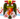

De: La Frikipedia, la enciclopedia extremadamente seria.
De: La Frikipedia, la enciclopedia extremadamente seria. De: La Frikipedia, la enciclopedia extremadamente seria.
| De la serie conflictos armados: | ||||
| Guerra Civil Española | ||||
| ||||
| Lugar y fecha | España y parte de África, 1936 - 1939 | |||
|---|---|---|---|---|
| Bandos | Leales | Rebeldes | ||
| Fuerzas | Brigadas Guiris | | ||
| Comandantes | Manuel Azaña José Giral Francisco Largo Caballero Juan Negrín Lluis Companys José Antonio Aguirre Belarmino Tomás |
Mola  Francisco Frasco | ||
| Armas | Piedras y tal... |
| ||
| Bajas | Soldados muertos: 9.999.999 heridos: 67 desaparecidos: 6 (a 3 los encontraron sus mamás) muertos: Ninguno. Utilizaron el truco "congelación disponible en el Worms 3D heridos: 13 (no les dieron tiempo a congelarse) desaparecidos: 200 muertos: 2 soldados. 20.000 piratas heridos: Sin datos desaparecidos: 0'3 |
pájaros heridos: 12 (unas tiritas y pa' casa) desaparecidos: Todos llegaron a sus casas sanos y salvos muertos: 12 valienti elementi heridos: 3 patrioti mundiale desaparecidos: 97.004 despistadi guerreri | ||
| Resultado | Gana un tipejo bajito y con bigote. | |||
La Guerra Civil Española tuvo lugar en algún momento del S.XX, más tirando a esa época de las fotos en blanco y negro. El origen de la trifulca es confuso, pero todo hace pensar que el causante fue un, por aquel entonces jovencito, jugador de volley-ball llamado Francisco Franco.
Desde el comienzo del nacional conflicto, se han planteado diversas teorías acerca del motivo que hizo estallar la guerra.
Harto de que la liga de voley se dividiera en distintas "conferencias", Franco decidió unificar a todos los equipos en un solo campeonato, cosa que no le sentó bien a todo el mundo. Por un lado ]teníamos a los partidarios de Franco; el Caja del Mar Girona, el Eroski Torrelavega y el Maspalomas, y por otro a los que preferían seguir tal y como estaban; el Real Madrid del Voley-ball, el Mármol Macael y la Deportiva Leonesa. La situación acabo por estallar en un partido del equipo de Franco, que por entonces acuñaba el alias de "Caudillo del Remate" ; los dos conjuntos (rivales en ideología) llegaron a las manos y más de uno se fue calentito a casa.
Cuando la trifulca terminó, Franco se reunió con los pivots de su equipo y, mediante sofisticados tejemanejes, planearon lo que sería una guerra. La guerra, vaya. El Caudillo decidió batallar en todos los frentes; en el real, en el imaginario y en el de la propaganda bélica, inventando con ello los posters. Al principio los hacían ellos mismos con cartulina y témperas pero, debido a que mucha gente se apuntó a su causa, pronto delegaron esa tarea a gente con estudios de actividades manuales.
La Segunda República Española estaba gobernada por un grupúsculo de ácratas al mando de Manuel Azaña, un demonio que desayunaba, comía, merendaba y cenaba bebés recién bautizados y bebía sangre de vírgenes en un cáliz sagrado. Azaña crió un ejército de no-muertos para que fueran quemando conventos (a ser posible con clérigos en su interior) y quitando de los ayuntamientos la insignia nacional. Frasco decidió que lo más recomendable sería emular a su ídolo Pelayo e iniciar una reconquista a lo largo y ancho de toda España.
En la España republicana había de todo: desde yates de colores vistosos hasta mansiones construidas en cuatro días debido a la eficacia laboral reinante. La gente era feliz ya que, según se cree, no necesitaban trabajar para comer: las fuentes públicas manaban chocolate fundido, espeso y humeante (como me gusta a mi) y los campos estaban repletos de suculentos manjares gratuitos. Pero no todo era felicidad en esa España, ya que un señor bajito llamado Francisco Apocalipsis Frasco, que por esos tiempo estaba en Marruecos explotando a las clases trabajadoras, estaba tratando de dar un golpe de estado con un ejército de decrépitos burgueses que querían que en su patria se volviese a transmitir "Médico de familia".
En esta guerra, como en todas, hubo dos bandos que lucharon hasta la muerte para conseguir que se santificasen las fiestas que ellos considerasen más relevantes.
Estaba compuesto por jovencillos con el pelo cortado a navaja, bigotillos finos y con el traje de los domingos hasta para hacer footing. Luchaban bajo un estandarte que sujetaba un moro que era amiguete del Membrillísimo, su gran e incondicional líder.
El partido que mejor representaba su política era la afamada Falange Espiñola, regida por el gran José Antonio Primo de Rivera, un jovencillo fontanero y con un talento especial para los pasodobles.
A su lado estaban dos grandes potencias europeas por aquel entonces: Alemania e Italia, con Hilter y Mucholimi al mando respectivamente. Aunque se diga que son aliados, lo único que hicieron para contribuir al Glorioso Movimiento Nacional fue salir en votos con el Codillo y hacer reuniones secretísimas para decidir a quién votar en Eurovisión, entre otras cosas.
En el otro lado del frente no había un líder claro; todo se votaba a mano alzada. Este otro bando no tenía una ideología clara. Eran tirando a la izquierda, con ideas algo novedosas y, ¿por qué no?, un poco pintamonas. Para entendernos, digamos que serían el equivalente a los actores españoles de hoy en día. De hecho, los padres de actores como Javier Cámara o Juan Diego Bottom formaban parte de este movimiento. Más que intentar conseguir un buen y numeroso ejército, se dedicaban a captar a distintas figuras de izquierdas por todo el mundo. De Cocodrilo Dundee, autor de un planfeto revolucionario algo coñazo.
Pronto hubo en el bando rojil demasiados gallos que querían controlar el gallinero y Televisión Pública, por lo que la gente no tenía nada mejor que hacer que ponerse a seguir ideológicamente a uno de los dos bandos. Pronto, España estuvo dividida y las primeras escaramuzas comenzaban. El bando de los "rojos" (el de Dundee) intentó una suerte de atentado contra Franco; un gatito asesino se infiltró en la base de operaciones del Caudillo con ánimos de matar, pero fue repelido y perseguido hasta que se le dio caza.
Franco montó en cólera; una cosa es una guerra y otra matar a alguien. Así pues no se le cayeron los anillos al crear una patrulla de asaltó. Este cuerpo se conocía como "Los Gigantes" porque, como las tradicionales figuras de las fiestas españolas, llevaban unos zancos larguísimos que les permitían andar sobre la superficie del hagua y atacar posiciones estratégicas utilizando los cauces de los ríos, como se dio por ejemplo en el Asalto a Cuenca, ciudad que fue atacada sin que nadie sepa muy bien por qué.
No contento con destruir la Ciudad Encantada, al Caudillo se le empezó a pirar la pelota. Cual Herodes, secuestró a todos los niños de esta ciudad metiéndolos en un saco y los llevó a su refugio secreto, experimentando con ellos en ámbitos genéticos y de adoctrinaje. Los niños aprendieron artes marciales y su cerebro fue lavado por máquinas proyectoras de imágenes y sonidos terribles. En unos meses, los niños estaban listos para combatir; su único deseo era matar a todos los rojos empleando patadas de lobo y garras de tigre. Eran los conocidos como "Niños de la Guerra".
Los Niños de la Guerra hicieron su debut en la llamada Batalla de la Muerte, donde se calcula que perecieron un millón de personas y más de doscientos animales, varios de ellos disfrazados. Los Niños atravesaron como un cuchillo la mantequilla las lineas de defensa de los rojos y se liaron a hostias con todo el mundo que pillaron por ahí. Segundos antes de morir Cocodrilo Dundee dio la orden de soltar la bomba atómica sobre la Isla de Mediorca, que se encontraba en el archipiélago balear (no tan grande como Mayorca, pero si mayor que Menorca) y que se hundió en el océano como ya le pasara a Pompeya o a la mismísima Atlantis, desapareciendo para siempre de la geografía terráquea.
El pueblo español se empezó a mosquear porque estaba muriendo mucha gente y eso a ellos no se lo había dicho nadie antes de empezar. Es por ello que se hizo un referéndum; se decidió acabar con la guerra y unificar la liga de voley-ball en un solo campeonato, solución que no dejó contento a ningún bando.
Los ejércitos se disolvieron y las aguas volvieron a su cauce, pero nunca más se supo de Franco. Hay quien dice que murió en la Batalla de la Muerte y hay quien asegura que un extraterrestre muy conocido se lo llevó a su planeta, donde se supone que todavía viven juntos.
Después vino un periodo denominado "posguerra" en el que la gente era muy feliz y se inventó la Leonor, y Sofía 2 las que serán nuestras reinas.
Se cree que en Sagrillas Pasa algo parecido cada 40 años.
| |
|---|
|
|
Autor(es):